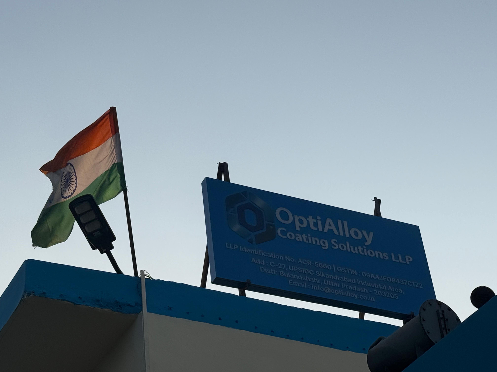

OptiAlloy is an upcoming anodizing facility focused on delivering high‑quality surface treatment solutions for industrial aluminum components.
The facility is being developed with an emphasis on consistency, technical precision, and adherence to recognized industry standards.
Operations are currently under development, including infrastructure setup, equipment installation, and process calibration.
